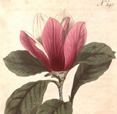

Magnolia
is a large genus that contains over 200 flowering plant species. It is name after French botanist Pierre Magnol and, having avolved before bees appeared, the flowers were developed to encourage pollination by beetle.